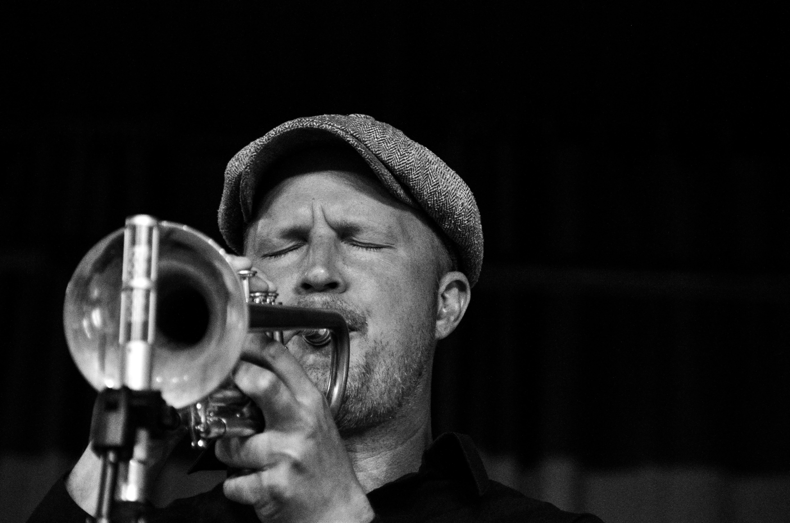

Jazz, musical form, often improvisational, developed by African Americans and influenced by both European harmonic structure and African rhythms. It was developed partially from ragtime and blues and is often characterized by syncopated rhythms, polyphonic ensemble playing, varying degrees of improvisation, often deliberate deviations of pitch, and the use of original timbres.
Any attempt to arrive at a precise, all-encompassing definition of jazz is probably futile. Jazz has been, from its very beginnings at the turn of the 20th century, a constantly evolving, expanding, changing music, passing through several distinctive phases of development; a definition that might apply to one phase - for instance, to New Orleans style or swing - becomes inappropriate when applied to another segment of its history, say, to free jazz. Early attempts to define jazz as a music whose chief characteristic was improvisation, for example, turned out to be too restrictive and largely untrue, since composition, arrangement, and ensemble have also been essential components of jazz for most of its history. Similarly, syncopation and swing, often considered essential and unique to jazz, are in fact lacking in much authentic jazz, whether of the 1920s or of later decades. Again, the long-held notion that swing could not occur without syncopation was roundly disproved when trumpeters Louis Armstrong and Bunny Berigan (among others) frequently generated enormous swing while playing repeated, unsyncopated quarter notes.